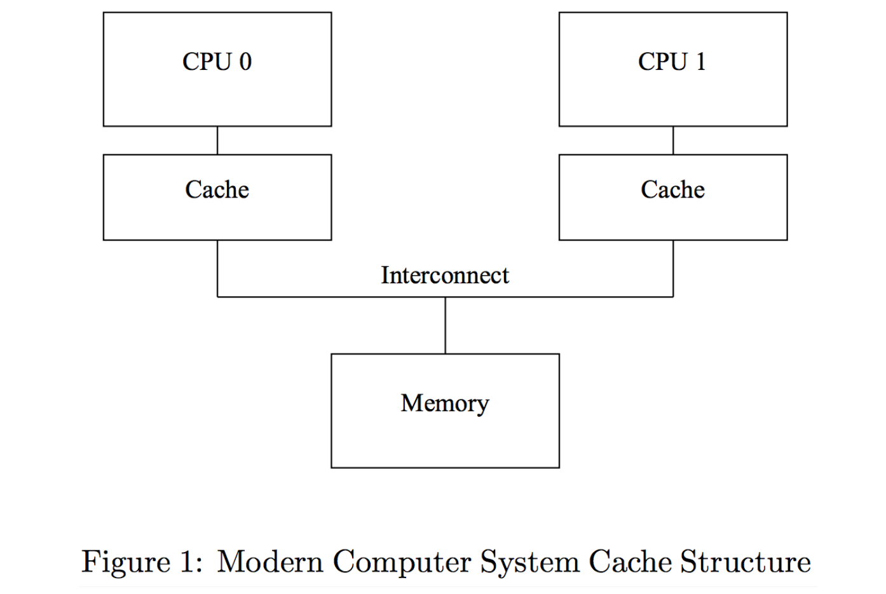

Java 中的volatile 关键字主要是用于处理并发场景下多线程访问共享变量的内存屏障（Memory Fence/Memory Barrier）问题。经常与同步块sychronized配合使用，因此很多人想到并发就想到它，但是它其实不是用来解决共享变量的问题。以前对它的理解也是浑浑噩噩，今天这里做一下系统性的梳理。
什么是内存屏障？
先看一张简易的硬件架构图

现代主流的计算机是多核的，而每个核心的CPU上又存在着缓存（L1, L2 等等）。CPU核心从缓存存取数据速度比从主存（Memory）上快，所以计算时CPU会优先从缓存上读写数据，其次才是主存。而Java中的线程运行时，是由CPU其中一个核心执行的，当多个线程访问主存上一个共享变量时，这个变量的值有在不同核心的缓存上存在不同的拷贝，这时候就存在数据不一致的问题（不可见问题），这个问题就是内存屏障。
Volatile 关键字
Java引入volatile关键字，为的就是解决这个问题：加了volatile关键字的变量，CPU读写这个变量时，直接从主存读取，不经过缓存。但是仅仅这样还会引入了其他问题，所以对使用volatile关键字的变量，JVM还会有一些更复杂的规则对其处理，比如对相关变量的可见性保证，禁止指令重排（Instruction Reordering）等等。
Volatile 可见性保证
Java的可见性保证不仅针对于声明了volatile关键字的变量，同时还包括以下规则：
- 如果线程A先修改了一个volatile变量x，然后线程B读取了该变量。则线程A在修改变量x之前修改的其他变量，对于线程B是可见的，即其他变量也直接刷新到主存（即使其他变量没有声明volatile）。
- 如果线程A读取了一个volatile变量x，此时其他对于线程A可见的变量，也会从主存读取（即使其他变量没有声明volatile）。
上面规则有点绕，可以看下代码：
1 | public class MyClass { |
1 | public class MyClass { |
指令重排问题
JVM在执行代码时，会进行指令重排，代码实际执行的顺序有可能与源码顺序不同，这会导致上面提到的volatile的可见性保证失效，比如下面代码：
1 | public class MyClass { |
update方法指令重排后可能是下面这个顺序（伪代码）：
1 | public void update(int years, int months, int days){ |
Volatile的Happens-Before防指令重排机制
为了再解决上面指令重排的问题，volatile关键字还有Happens-Before Guarantee规则来控制指令重排。规则如下：
- 在写volatile变量之前对其他变量的读写操作，在指令重排之后，这些操作不会重排到写volatile变量之后。也就是上面指令重排问题例子的伪代码，实际上不会出现（重排后monthns和years的操作跑到days之前）。
- 在读volatile变量之后对其他变量的读写操作，在指令重排后，这些操作不会排到读volatile变量之前。
上面这两个规则就强制保证了指令重排不会影响volatile的可见性保证。
用Volatile会有什么问题？
首先只用volatile，是没办法解决多线程共享变量的问题的，因为它并不加锁。它只是保证了线程每次的写操作，对其他线程是立即可见的。竞争条件下，还需要同步锁或者CAS机制来保证变量的线程安全。
另外由于volatile强制线程从主存读取数据，比起CPU缓存，性能上是有很大损失的。
Reference
http://tutorials.jenkov.com/java-concurrency/volatile.html#the-java-volatile-visibility-guarantee